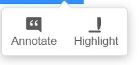
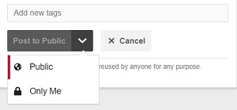

시계열 공략집 with R
2022-01-16
들어가며

슬기로운 통계생활에서 2022년을 맞이하여 새롭게 시작한 시계열 스터디 내욜을 정리해놓은 레포입니다! 많은 내용은 다음의 R 시계열 교과서인 Forecasting: Principles and Practice (이하 fpp3) 책을 기반으로 하고 있으나, 슬기로운 통계생활의 입맛에 맞게 내용이 추가 혹은 변경되어 있음을 알려드립니다.
공략집 사용법
- 중요표시, 주석달기: 읽다가 중요하거나 나중에 따로 보고싶은 기능의 경우, 드래그를 하면 다음과 같은 선택 버튼이 나온다. 형광펜 긋고 싶은 경우
Highlight선택, 주석을 달고 싶은 경우Annotate을 선택하자.

하이라이팅 on/off: 가끔은 하이라이팅 해 놓은 것들을 없애고 글 만 읽고싶은 경우가 있을텐데 그 때엔 오른쪽 상단 동그라미에 점이 찍혀있는 버튼를 클릭하면 하이라이팅 된 것이 사라진다.
주석 공개/비공개: 주석은 필자와 다른 독자가 볼 수 있도록
public하게 남길 수도 있고, 자신만 볼 수 있게끔 private으로 설정 할 수 있다.

- 주석 기능을 이용하여 필자에게 피드백을 줄 수 있다. 오타나 오류 발견시 주석을 달아주시면 필자가 주기적으로 체크해서 고쳐나가도록 하겠다.
알아두기
하이라이팅과 주석들을 나중에 따로 볼 수 있다. 자주 방문하시는 분들은 가입하시고 사용하시면 여러모로 편할 것이다.
설치하기
설치 역시 간단한다. 여느 R패키지와 같이 install.packages() 함수를 사용하면 된다. 서브 라이브러리인 torchaudio와 torchvision이 있으나, 책의 뒷부분에서 다루기로 한다.
install.packages("fpp3")기본 패키지
앞으로의 내용에 있어서 다음의 두 패키지는 기본으로 불러와서 사용하는 것을 약속으로 한다.
library(tidyverse)
library(fpp3)